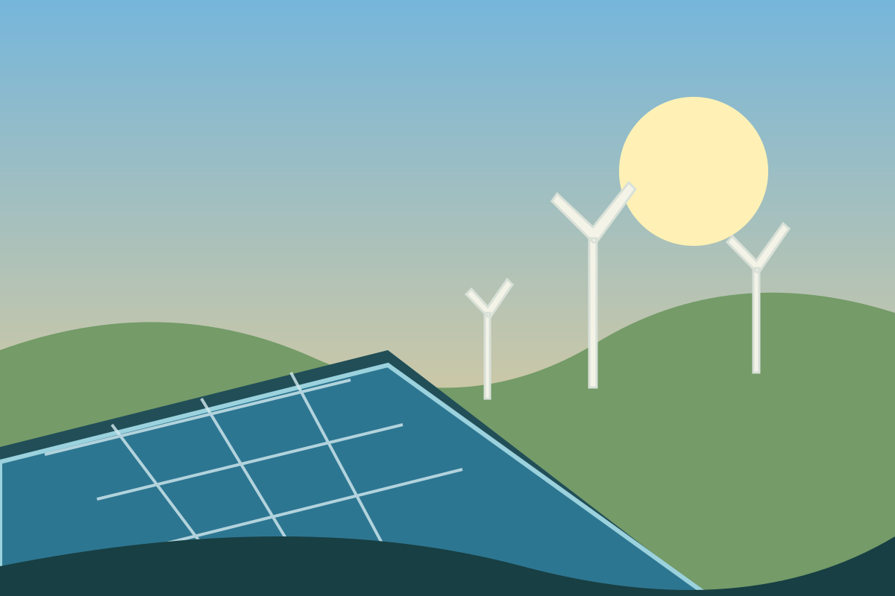
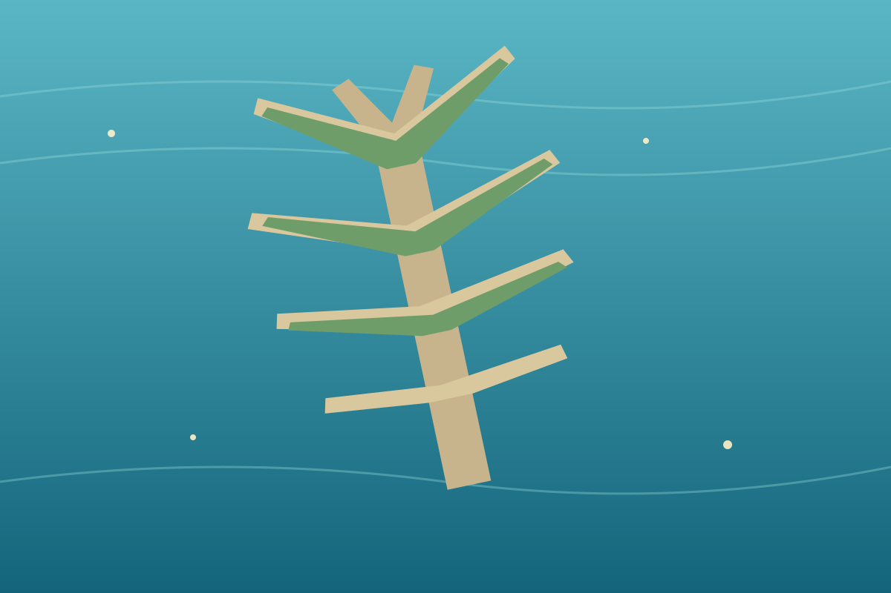

Oportunidades
Infraestrutura moderna, turismo, empregos, inovação e investimento em novas tecnologias.
GEOGRAFIA • INOVAÇÃO • SUSTENTABILIDADE
Conheça como os Emirados Árabes Unidos transformaram a paisagem, desenvolveram sua economia e enfrentam os desafios da água e da energia.
Os Emirados Árabes Unidos ficam na Península Arábica, no Oriente Médio. O país é conhecido por suas cidades modernas, grandes obras e reservas de petróleo.
O clima é árido, chove pouco e a água doce é limitada. Por isso, o desenvolvimento do país também envolve escolhas importantes sobre consumo, energia, recursos naturais e proteção ambiental.
ODS 6 — Garantir a disponibilidade e a gestão sustentável da água e do saneamento para todos.
Nos Emirados, a escassez de água doce torna o abastecimento um desafio. A dessalinização — processo que remove o sal da água do mar — é uma das principais formas de produzir água para as cidades.
Esse processo exige energia e pode gerar impactos ambientais, como a devolução de água concentrada em sal ao mar. Economizar água, reutilizar águas tratadas e proteger os ecossistemas são medidas importantes.
ODS 7 — Ampliar o acesso a energia confiável, moderna, sustentável e a preço acessível.
Além de produzir petróleo e gás natural, os Emirados investem em fontes renováveis, especialmente energia solar. A grande quantidade de dias ensolarados favorece a instalação de painéis e usinas solares.
A transição energética é um processo gradual: envolve desenvolver tecnologias limpas, usar energia com eficiência e reduzir a dependência de combustíveis fósseis ao longo do tempo.

OBRAS SOBRE O MAR
Projetos que ampliam a área urbana e transformam o litoral.
Em Dubai, empreendimentos como Palm Jumeirah foram construídos com aterro e materiais dragados do fundo do mar. As ilhas abrigam hotéis, residências, praias e áreas de lazer, atraindo turismo e investimentos.
Essas obras também trazem desafios: alteram correntes marítimas, podem afetar habitats costeiros e exigem monitoramento ambiental e manutenção constante.
Ver benefícios e desafios →
ARQUITETURA E NATUREZA
Jardins verticais usam paredes e estruturas de edifícios para cultivar plantas. Em cidades quentes, a vegetação pode oferecer sombra, melhorar a experiência dos espaços e contribuir para reduzir parte do calor nas superfícies.
Mas eles precisam de planejamento: espécies adequadas ao clima, irrigação eficiente, manutenção e, sempre que possível, água reutilizada. Em regiões desérticas, o uso responsável da água é essencial.
A RIQUEZA QUE MUDOU O PAÍS
A exploração de petróleo e gás ajudou a financiar a rápida transformação econômica e urbana dos Emirados.
As receitas do setor contribuíram para investimentos em infraestrutura, portos, estradas, saúde, educação e serviços. O petróleo também continua ligado ao comércio internacional e à indústria energética.
Por outro lado, os combustíveis fósseis emitem gases de efeito estufa quando utilizados. Por isso, o país procura diversificar sua economia, investindo também em turismo, aviação, finanças, tecnologia e energia renovável.
Receitas ajudaram a construir infraestrutura e serviços.
O setor movimenta cadeias produtivas e exportações.
Reduzir emissões e diversificar a economia é parte da transição.
Energia solar e outros setores ampliam as opções econômicas.
Infraestrutura moderna, turismo, empregos, inovação e investimento em novas tecnologias.
Escassez de água, consumo elevado de energia, emissões e impactos das obras costeiras.
Energia renovável, reuso de água, proteção marinha, eficiência e planejamento urbano sustentável.
Os Emirados Árabes Unidos mostram como recursos naturais, planejamento e inovação podem transformar um país. Ao mesmo tempo, os ODS 6 e 7 lembram que o progresso precisa considerar o acesso à água, a energia limpa e a preservação ambiental.
O desafio é continuar desenvolvendo as cidades e a economia sem ignorar os limites naturais do ambiente.